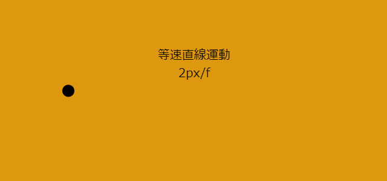

等速直線運動
 実行結果を見る
解説/アルゴリズム
速度を変えず、一直線上を進む運動のことを等速直線運動と呼びます。
const speed = 2;
function update(): void {
x += speed;
}
実際のコード例です。
speed の値を変化させなければ等速直線運動になります。
const speed = -2;
function update(): void {
x += speed;
y += speed;
}
速度をマイナス値にしたり、y にも speed を足して斜めに移動しても速度さえ固定あれば等速直線運動といえます。
等速直線運動の速度
[等速直線運動の速度] = [変位] ÷ [経過時間]
オブジェクトが等速直線運動で移動するとします。
スタート位置が 0px、50 フレームかけて移動した位置が-100px の場合の速度を求めるには下記の計算式となります。
-100px / 50フレーム = -2px/フレーム
const speed = -2;
function update(): void {
obj.x += speed;
}
-2px/フレームをコードで書いた例です。
等速直線運動の変位
等速直線運動の速度は固定なので、変位は[速度] x [時間]の計算結果になります。
例えば速度が-2px/フレームの場合、
10 フレーム後の変位は-2px * 10 = -20px
20 フレーム後の変位は-2px * 20 = -40px
となります。